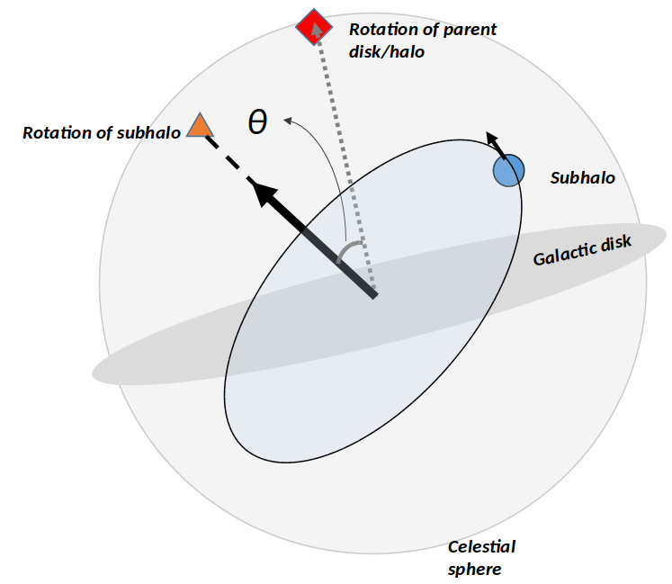

Research
Cosmological N-body simulations are essential tools in verifying and analyzing the details of the Lambda Cold Dark Matter (ΛCDM) paradigm of the Universe. In my work I analyze the effects of baryons in these simulations by comparing cosmological, zoom-in simulations with baryons (gas and stars) to their dark matter-only counterparts, specifically focusing on the statistics and kinematics of satellite galaxies.
My initial work focused on investigating the formation of planes of satellites around Milky Way-sized galaxies and comparing them to the satellite planes around the Milky Way and Andromeda. Currently I am looking at the masses and velocities of satellite galaxies around dwarf galaxies (100 to 1000 times less massive than the Milky Way) and quantifying the parameters that control the differences that exist in these satellites between the dark matter-only and baryonic simulations.
Planes of Satellites
It has long been observed that dwarf galaxies around both the Milky Way and Andromeda tend to lie in coherent planes. The majority of the classical dwarfs around the Milky Way lie on a plane and over half of the known dwarfs around M31 lie on one (or two closely orientad) plane almost perpendicular to the plane of the galaxy. My work involves looking at similar galxies and their dwarfs in high resolution cosmological simulations and studying the statistics of such planes forming. Another key feature of my work is to compare whether the inclusion of baryons significantly affects the kinematics of these dwarf galaxies and their eventual positioning (or lack thereof) into coherent planes. The key goal is to understand whether satellite galaxy planes are a common phenomenon or due to causes particular to the MW-M31 system.
The sample of four Milky Way sized galaxies used in this work come from our simulations (run using Gasoline), and each galaxy comes in the form of a baryonic and a dark matter-only version. This work led to the conclusion that while coherent planes of similar numbers and dimensions to those of the Milky Way and M31 do tend to form in simulations, they are nowhere as coherent as those in the local Universe. Their formation in the simulations seems to be tied to the filamentary nature of accretion during the formation of the parent galaxies. The oriention and number of filaments feedding into the parent halo affects the orientation and coherency of the eventual planes with more chaotic accretion histories leading to a lack of distinct planes. Whether this mechanism is the cause of the MW and M31 planes is a matter of further investigation.
Dwarfs around dwarfs
Recent surveys have begin to identify satellites of dwarf galaxies around the Milky Way, opening up new parameters spaces of physical properties to comapre to in simulations. Using a sample of 8 parent galaxies with masses within a factor of a few of the unstipped mass of the Small Magellanic Cloud, I am comparing the changes in massses and kinematics of satellite galaxies (dwarfs around dwarfs) both over time and between DM-only and baryonic runs. The simulations are run using ChaNGa (Charm N-body GrAvity solver), which contains an improved implementation of SPH (compared to Gasoline) and models gas physics at the hot-cold interface more realistically. The zoomed-in simulation, nicknamed, "Captain Marvel", is centered on a "sheet" of dwarf galaxies in the field.
We track matched satellites between the two versions of the galaxies, comparing masses, infall times, velocities, positions, etc over their lifetimes. Preliminary conclusions show some surprisingly unexpected differences between the two.